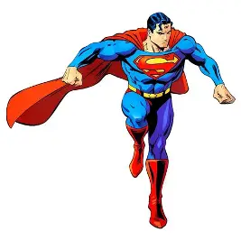

My name is Muhammad Faizan Sharafat, and I am a student from Pakistan.
I am passionate about learning new things, improving my skills, and developing
my knowledge in computer science and programming.
I am a motivated and hardworking student who wants to achieve success through dedication, consistency, and continuous learning. My goal is to strengthen my technical skills, become a professional programmer, and build a successful career in the field of information technology.
Education plays an important role in shaping my personality, improving my knowledge, and helping me achieve my future goals. My educational journey has helped me develop a strong foundation in academics, critical thinking, and problem-solving. I always try to learn new things and improve my skills to prepare myself for a successful professional career.
| Degree | Marks | Status | |
|---|---|---|---|
| Totle | Obtain | ||
| Metric | 1100 | 821 | Pass |
| ICS | 1200 | 966 | pass |
| BS | 4 | 3.27 | Continue |
A collection of creative web development projects, including
Web Rise Media, Skoon clothing and jewelry brand, WSU Consultant,
and my personal portfolio. Each project reflects my focus on modern
UI/UX design, responsive layouts, clean code, and user-friendly digital
experiences. see all Project
I have earned multiple certificates in various technical and creative
fields, including UI/UX Design, MERN Stack Development, Python Programming,
Video Editing, and Social Media Marketing. These certifications reflect my
commitment to continuous learning and my ability to combine technical expertise
with creativity to deliver effective digital solutions.see all certificate